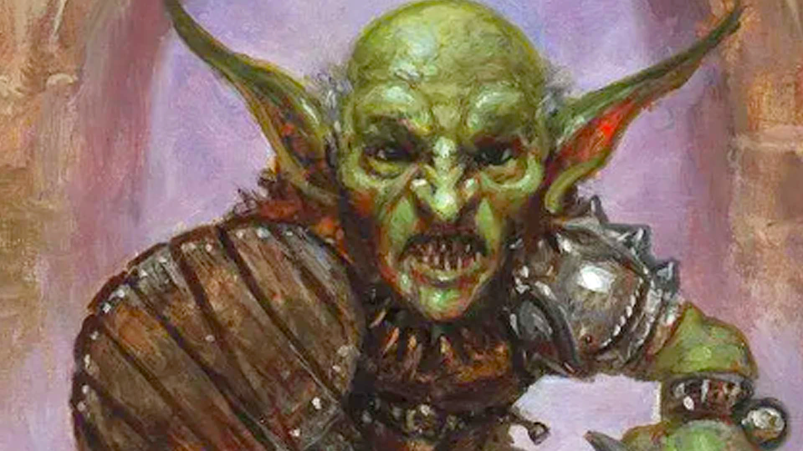
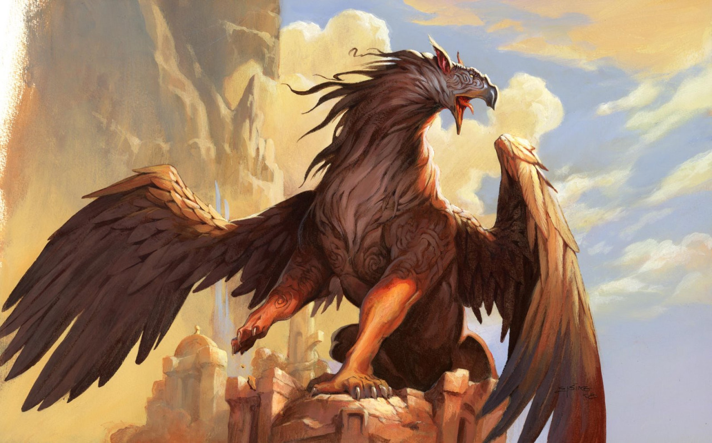

Bestiário de Arcana

Beholder
O Beholder é um monstro esférico com um olho central e múltiplos talos oculares, cada um com um poder mágico diferente. Criaturas tirânicas, elas buscam dominar e aniquilar tudo à sua volta.

Goblin
Pequenos, covardes e traiçoeiros, os goblins são criaturas malignas que vivem em tribos. Preferem emboscadas e ataques em massa para superar seus inimigos.

Grifo
Criaturas majestosas com corpo de leão e cabeça e asas de águia, os grifos são feras orgulhosas e ferozes. Podem ser domados, servindo como montarias poderosas.